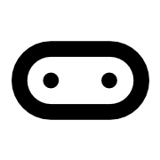
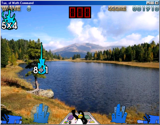
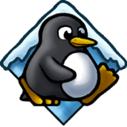
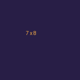
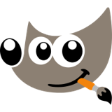
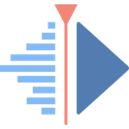

Scratch 3
Ανοιχτού κώδικα · Windows, Android
Φτιάχνουμε δικά μας παιχνίδια, ιστορίες και κινούμενα σχέδια ενώνοντας χρωματιστά τουβλάκια κώδικα σαν παζλ. Παίζει και μέσα από τον browser, χωρίς εγκατάσταση.
Πώς το βάζω: Στον υπολογιστή: πάτα «Direct download», άνοιξε το αρχείο και «Επόμενο» μέχρι το τέλος. Δεν χρειάζεται λογαριασμός για να παίξεις — μόνο αν θες να αποθηκεύεις online.
Πρόσεχε: Η εφαρμογή Android δουλεύει μόνο σε τάμπλετ, όχι σε κινητό.
⬇ Σελίδα λήψης — scratch.mit.edu/download

micro:bit MakeCode
Ανοιχτού κώδικα · online, Android, iOS
Προγραμματίζουμε με τουβλάκια έναν μικρό υπολογιστή με φωτάκια, κουμπιά και αισθητήρες — καρδούλες, βήματα, ρομπότ. Έχει και προσομοιωτή στην οθόνη.
Πώς το βάζω: Στα Windows δεν θέλει εγκατάσταση: γράφεις μέσα στον browser και περνάς το πρόγραμμα με καλώδιο USB. Στο κινητό το στέλνεις με Bluetooth.
Πρόσεχε: Το ίδιο το micro:bit είναι ξεχωριστή συσκευή· χωρίς αυτό δουλεύει μόνο ο προσομοιωτής.
⬇ Σελίδα λήψης — makecode.microbit.org
ToonyTool
Δωρεάν · online
Φτιάχνουμε κόμικς: διαλέγουμε φόντο και ήρωες, βάζουμε συννεφάκια με διαλόγους και κατεβάζουμε την εικόνα.
Πώς το βάζω: Δεν εγκαθίσταται και δεν θέλει λογαριασμό: ανοίγεις τη σελίδα και ξεκινάς. Στο τέλος πατάς λήψη για να σώσεις το κόμικ ως εικόνα.
Πρόσεχε: Αν δεν πατήσεις λήψη, η δουλειά σου χάνεται όταν κλείσεις τη σελίδα.
⬇ Σελίδα λήψης — toonytool.com
ONLYOFFICE
Ανοιχτού κώδικα · Windows, Android, iOS
Πρόγραμμα γραφείου: κείμενα, πίνακες με αριθμούς και παρουσιάσεις. Ανοίγει και αποθηκεύει αρχεία Word, Excel και PowerPoint.
Πώς το βάζω: Διάλεξε «Desktop Editors» για Windows και τρέξε το αρχείο. Στο πρώτο άνοιγμα σού ζητά λογαριασμό — πάτα «Παράλειψη», δουλεύει και χωρίς.
Πρόσεχε: Μην μπερδευτείς με την επιλογή «Cloud/Docs Server» — αυτή είναι για διακομιστές, όχι για το σπίτι.
⬇ Σελίδα λήψης — onlyoffice.com/download-desktop
LibreOffice
Ανοιχτού κώδικα · Windows, macOS, Linux
Πλήρης σουίτα γραφείου στα ελληνικά: Writer για κείμενα, Calc για πίνακες, Impress για παρουσιάσεις.
Πώς το βάζω: Κατέβασε την έκδοση για τα Windows και τρέξε την. Θες και τα ελληνικά μενού; Κατέβασε επιπλέον το «Μεταφρασμένο περιβάλλον» από την ίδια σελίδα.
Πρόσεχε: Κατέβασέ το μόνο από το libreoffice.org — υπάρχουν σελίδες που το δίνουν με διαφημίσεις μέσα.
⬇ Σελίδα λήψης — el.libreoffice.org/download
GCompris
Ανοιχτού κώδικα · Windows, Android
Δεκάδες μικρές δραστηριότητες: ποντίκι και πληκτρολόγιο, αριθμοί, η ώρα, ζωγραφική, γρίφοι. Υπάρχει και στα ελληνικά.
Πώς το βάζω: Στα Windows κατέβασε το αρχείο .exe και τρέξε το. Τη γλώσσα την αλλάζεις από το γρανάζι κάτω δεξιά.
Πρόσεχε: Στο Play Store η πλήρης έκδοση είναι επί πληρωμή· από τη σελίδα του GCompris για υπολογιστή είναι δωρεάν ολόκληρη.
⬇ Σελίδα λήψης — gcompris.net/downloads

Tux Math
Ανοιχτού κώδικα · μόνο υπολογιστής
Μετεωρίτες με πράξεις πέφτουν στα ιγκλού των πιγκουίνων· γράφεις γρήγορα το σωστό αποτέλεσμα και τους σώζεις.
Πώς το βάζω: Πάτα το πράσινο «Download», άνοιξε το αρχείο και «Επόμενο». Διάλεξε πράξη και επίπεδο από το μενού του παιχνιδιού.
Πρόσεχε: Στο SourceForge υπάρχουν μεγάλα διαφημιστικά κουμπιά «Download» — πάτα μόνο το πράσινο πάνω από το όνομα του προγράμματος.
⬇ Σελίδα λήψης — sourceforge.net/projects/tuxmath

SuperTux
Ανοιχτού κώδικα · μόνο υπολογιστής
Παιχνίδι πλατφόρμας: τρέχεις, πηδάς πάνω στους εχθρούς και μαζεύεις νομίσματα ως το τέλος της πίστας.
Πώς το βάζω: Κατέβασε την έκδοση για Windows, άνοιξε το αρχείο και τρέξε το. Δεν θέλει λογαριασμό ούτε σύνδεση στο ίντερνετ.
Πρόσεχε: Αν το Windows Defender ρωτήσει, διάλεξε «Περισσότερα → Εκτέλεση»: το αρχείο είναι από την επίσημη σελίδα.
⬇ Σελίδα λήψης — supertux.org/download
SuperTuxKart
Ανοιχτού κώδικα · Windows, Android, iOS
Αγώνες με καρτ: διαλέγεις ήρωα, μαζεύεις δώρα στην πίστα και τρέχεις ενάντια στους φίλους σου ή στον υπολογιστή.
Πώς το βάζω: Στα Windows κατέβασε το αρχείο και τρέξε το. Παίζεται και δύο άτομα στον ίδιο υπολογιστή από το μενού «Split screen».
Πρόσεχε: Θέλει αρκετή κάρτα γραφικών· αν κολλάει, χαμήλωσε τα γραφικά από τις ρυθμίσεις.
⬇ Σελίδα λήψης — supertuxkart.net/Download
Extreme Tux Racer
Ανοιχτού κώδικα · μόνο υπολογιστής
Ο Tux γλιστράει με την κοιλιά σε χιονισμένες πλαγιές: στρίβεις, αποφεύγεις τα δέντρα και μαζεύεις ψάρια.
Πώς το βάζω: Πάτα το πράσινο «Download» και τρέξε το αρχείο. Παίζεται με τα βελάκια του πληκτρολογίου.
Πρόσεχε: Και εδώ πρόσεχε τις διαφημίσεις-«Download» γύρω από το πραγματικό κουμπί.
⬇ Σελίδα λήψης — sourceforge.net/projects/extremetuxracer

Timez Attack
Δωρεάν · μόνο στο εργαστήριο
Περιπέτεια σε τρισδιάστατο κόσμο: για να περάσεις τα τέρατα και τις πόρτες απαντάς σωστά και γρήγορα στην προπαίδεια.
Πώς το βάζω: Το παίζουμε μόνο στους υπολογιστές του εργαστηρίου· δεν χρειάζεται να εγκαταστήσεις κάτι.
Πρόσεχε: Η επίσημη σελίδα του δεν λειτουργεί πια — μην το κατεβάσεις από άγνωστα sites.
Firefox + uBlock Origin
Ανοιχτού κώδικα · Windows, Android
Ο browser με τον οποίο μπαίνουμε στο ίντερνετ. Με το πρόσθετο uBlock Origin κόβει διαφημίσεις, αναδυόμενα παράθυρα και πολλές επικίνδυνες σελίδες.
Πώς το βάζω: Εγκατέστησε τον Firefox. Μετά γράψε «uBlock Origin» στα πρόσθετα, πάτα «Προσθήκη στον Firefox» και θα εμφανιστεί μια κόκκινη ασπίδα πάνω δεξιά (αν δεν τη βλέπεις, πάτα το κομματάκι παζλ).
Πρόσεχε: Αν μια σελίδα δεν δουλεύει, πάτα την ασπίδα και το μεγάλο μπλε κουμπί — πρώτα όμως ρώτα δάσκαλο ή γονιό. Το uBlock δεν μας προστατεύει από όλα: ποτέ κωδικούς σε αγνώστους. Στο iPhone ο Firefox δεν δέχεται uBlock Origin.
⬇ Σελίδα λήψης — mozilla.org/firefox
Brave
Ανοιχτού κώδικα · Windows, Android, iOS
Γρήγορος browser που κόβει μόνος του διαφημίσεις και ιχνηλάτες. Έχει γονικά φίλτρα και συγχρονισμό με κινητό και τάμπλετ.
Πώς το βάζω: Κατέβασε και τρέξε το αρχείο· στο τέλος σε ρωτά αν θες να γίνει ο βασικός browser.
Πρόσεχε: Έχει δικές του «ανώνυμες διαφημίσεις» και κρυπτονόμισμα (BAT) — κλείσ' τα από Settings → Brave Rewards.
⬇ Σελίδα λήψης — brave.com/download
Thunderbird
Ανοιχτού κώδικα · Windows, macOS, Linux, Android
Εφαρμογή αλληλογραφίας από τη Mozilla: πολλά email, επαφές, ημερολόγια και υπενθυμίσεις σε ένα παράθυρο.
Πώς το βάζω: Μετά την εγκατάσταση γράφεις email και κωδικό και τα βρίσκει μόνο του τα υπόλοιπα.
Πρόσεχε: Τον κωδικό του email τον βάζει ο γονιός ή ο δάσκαλος — δεν τον δίνουμε σε κανέναν άλλο. Για iPhone δεν υπάρχει.
⬇ Σελίδα λήψης — thunderbird.net
Stirling PDF
Ανοιχτού κώδικα · online
Δουλεύουμε με PDF μέσα από τον browser: ένωση, χώρισμα, περιστροφή, συμπίεση και μετατροπή σελίδων.
Πώς το βάζω: Δεν εγκαθίσταται: ανοίγεις τη σελίδα, ανεβάζεις το PDF, διαλέγεις εργαλείο και κατεβάζεις το αποτέλεσμα.
Πρόσεχε: Μην ανεβάζεις έγγραφα με προσωπικά στοιχεία σε διαδικτυακό εργαλείο.
⬇ Σελίδα λήψης — stirlingpdf.io
VLC Media Player
Ανοιχτού κώδικα · όλες οι συσκευές
Ανοίγει σχεδόν κάθε βίντεο και τραγούδι, χωρίς διαφημίσεις και χωρίς να συλλέγει δεδομένα.
Πώς το βάζω: Κατέβασε και τρέξε το αρχείο· μετά κάνε δεξί κλικ σε ένα βίντεο → «Άνοιγμα με → VLC».
Πρόσεχε: Κατέβασέ το μόνο από το videolan.org· κυκλοφορούν αντίγραφα με πρόσθετα προγράμματα.
⬇ Σελίδα λήψης — videolan.org/vlc
MPV
Ανοιχτού κώδικα · Windows, Android
Πολύ απλό και γρήγορο πρόγραμμα αναπαραγωγής: σέρνεις το βίντεο πάνω του και παίζει.
Πώς το βάζω: Στα Windows γράψε «mpv» στην αναζήτηση του Microsoft Store και πάτα «Λήψη».
Πρόσεχε: Χρήσιμα πλήκτρα: Διάστημα παύση, ← → πίσω/μπροστά, F πλήρης οθόνη, 9 και 0 ήχος, Q κλείσιμο.
⬇ Σελίδα λήψης — Microsoft Store: «mpv»

GIMP
Ανοιχτού κώδικα · Windows, macOS, Linux
Επεξεργασία εικόνας: σχεδιασμός, φωτομοντάζ και διόρθωση φωτογραφιών — εναλλακτική του Photoshop.
Πώς το βάζω: Κατέβασε την έκδοση για Windows και τρέξε την. Η πρώτη εκκίνηση αργεί λίγο — είναι φυσιολογικό.
Πρόσεχε: Έχει πολλά παράθυρα· αν «χαθούν», Παράθυρα → Επαναφορά διάταξης.
⬇ Σελίδα λήψης — gimp.org/downloads

Kdenlive
Ανοιχτού κώδικα · Windows, macOS, Linux
Μοντάζ βίντεο με πολλά κανάλια, εφέ, τίτλους και ήχο — για αρχάριους και για προχωρημένους.
Πώς το βάζω: Διάλεξε «Windows» και τρέξε το αρχείο. Σέρνεις τα βίντεο στη γραμμή χρόνου και στο τέλος πατάς «Απόδοση».
Πρόσεχε: Αποθήκευε συχνά το έργο σου: η επεξεργασία βίντεο ζορίζει τον υπολογιστή.
⬇ Σελίδα λήψης — kdenlive.org/download
Audacity
Ανοιχτού κώδικα · Windows, macOS, Linux
Εγγραφή και επεξεργασία ήχου: κόψιμο, αντιγραφή, φίλτρα και εφέ σε WAV, MP3, FLAC και Ogg.
Πώς το βάζω: Κατέβασε και τρέξε το αρχείο. Για εγγραφή πάτα το κόκκινο κουμπί — πρώτα διάλεξε το μικρόφωνο από πάνω.
Πρόσεχε: Για να βγάλεις MP3 πάτα Αρχείο → Εξαγωγή· η απλή αποθήκευση φτιάχνει αρχείο που ανοίγει μόνο το Audacity.
⬇ Σελίδα λήψης — audacityteam.org/download
OBS Studio
Ανοιχτού κώδικα · Windows, macOS, Linux
Εγγραφή οθόνης και ζωντανή μετάδοση, με σκηνές και πολλές πηγές εικόνας και ήχου.
Πώς το βάζω: Μετά την εγκατάσταση τρέξε τον «Οδηγό αυτόματης ρύθμισης» και διάλεξε «Βελτιστοποίηση για εγγραφή».
Πρόσεχε: Πριν μεταδώσεις κάτι ζωντανά, ρώτα γονιό ή δάσκαλο — φαίνεται ό,τι έχεις στην οθόνη.
⬇ Σελίδα λήψης — obsproject.com/download
Linux Mint
Ανοιχτού κώδικα · λειτουργικό σύστημα
Ελεύθερο λειτουργικό σύστημα, εναλλακτικό των Windows. Ο πυρήνας Linux ξεκίνησε το 1991 από τον Linus Torvalds.
Πώς το βάζω: Κατεβάζεις ένα αρχείο .iso, το γράφεις σε στικάκι και ο υπολογιστής ξεκινά από εκεί — μπορείς να το δοκιμάσεις χωρίς να το εγκαταστήσεις.
Πρόσεχε: Η εγκατάσταση σβήνει αρχεία αν διαλέξεις λάθος δίσκο — γίνεται πάντα με μεγάλο.
⬇ Σελίδα λήψης — linuxmint.com/download
PdfCraft
Ανοιχτού κώδικα · Windows, macOS, Linux
Πρόγραμμα για PDF στον ίδιο τον υπολογιστή: διαβάζεις, ενώνεις, χωρίζεις, γυρίζεις, σβήνεις και ξαναβάζεις σελίδες, και ανοίγει και κλειδωμένα αρχεία. Κρατά συνδέσμους, φόρμες και σελιδοδείκτες όταν ενώνει ή χωρίζει.
Πώς το βάζω: Από τη σελίδα του διαλέγεις το αρχείο της συσκευής σου (στα Windows το .msi) και το τρέχεις. Υπάρχει και φορητή έκδοση .zip που δεν θέλει εγκατάσταση.
Πρόσεχε: Είναι ακόμη σε πρώιμη έκδοση (early alpha), οπότε κράτα πάντα αντίγραφο του PDF πριν το αλλάξεις. Δεν χρειάζεται λογαριασμό και δεν στέλνει τίποτα στο ίντερνετ — όλα γίνονται στον υπολογιστή σου, σε αντίθεση με τα διαδικτυακά εργαλεία PDF.
⬇ Σελίδα λήψης — getartcraft.com/apps/pdfcraft